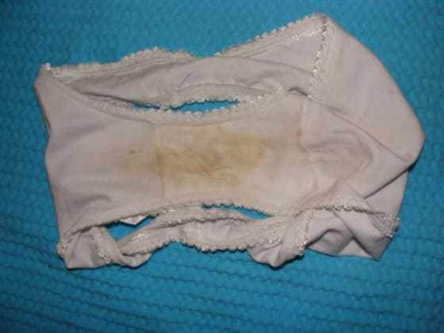
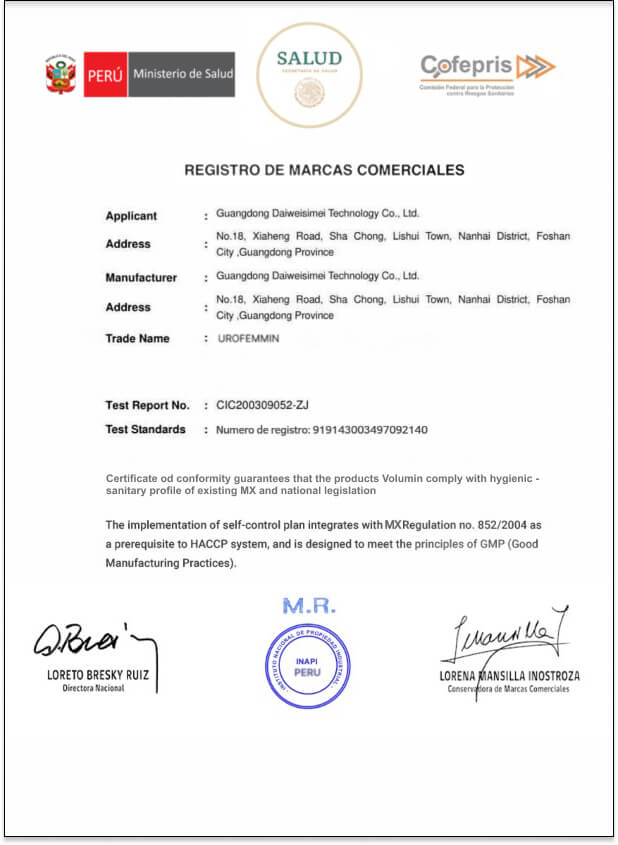
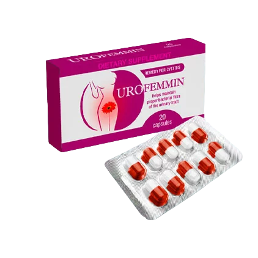

La incontinencia urinaria y la cistitis en las mujeres conducen al cáncer cervical temprano. ¡No seas indiferente a tu salud!" - El urólogo nos cuenta sobre cómo deshacerse de las principales enfermedades femeninas.

Sin embargo, hoy en día, estas enfermedades pueden ser tratadas efectivamente en casa en poco tiempo.
g
- De hecho, muchas mujeres ni siquiera se dan cuenta de que es una enfermedad realmente peligrosa y menosprecian las consecuencias. Muchas esperan que pase por sí solo con el tiempo, pero nunca pasa. La cistitis es una enfermedad infecciosa extremadamente grave que provoca daños graves en toda la vejiga. Posteriormente, la infección a través de la vejiga penetra en los riñones y luego comienza la infección de todo el organismo.
Y la incontinencia urinaria puede destruir no solo la vida de la mujer: debido a las fugas constantes y al olor desagradable, la mujer tiene complejos y relaciones tensas con los demás. Esto se explica fácilmente: las personas que huelen a orina generalmente son rechazadas, ya que este olor es desagradable para las personas. Pero aún así, el principal peligro de la incontinencia urinaria es que en un medio húmedo y cálido la microbiota patógena se multiplica rápidamente, penetra en la vagina y se asienta sobre su mucosa.
asdq
Desafortunadamente, si la micción espontánea no se trata, terminará con el hecho de que la vejiga dejará de contener la orina por completo y tendrás que recurrir al cateterismo. Este procedimiento implica la inserción en la vejiga de un catéter que está conectado a un receptor de orina suspendido de la pierna.
De hecho, una mujer que lucha contra las fugas de orina con los salvaslips (o no lucha en absoluto) vive en un riesgo constante. Y para ser honesta, no entiendo por qué las mujeres descuidan tanto su salud. Ahora hay métodos bastante efectivos para tratar tanto la incontinencia urinaria como la cistitis. Después de 2-3 semanas puedes olvidarse de este problema para siempre.
 dasdqwr
- ¿Te refieres a cirugía?
asdqt
- Claro que no. Y aún más, quiero disuadir a todos de hacer tales operaciones. Incluyendo el uso de láser y procedimientos de sling mediouretrales. A pesar de la alta velocidad de la manipulación (con lo que a menudo cobran los médicos deshonestos que anhelan dinero), estas operaciones tienen muchas consecuencias negativas para la salud de la mujer, ya que conducen al estancamiento de la orina ya dentro del cuerpo, y esto puede causar los mismos quistes. Pero la desventaja más importante de la intervención quirúrgica es que esto es solo una eliminación cosmética del problema: se eliminan las consecuencias de la enfermedad y no sus causas.
bxadq
Dado que la causa permanece, el problema vuelve a aparecer en el futuro. Y muy rápidamente, ya después de 1-2 años.
g
Para deshacerte de la incontinencia urinaria y de la cistitis de una vez por todas, hay que eliminar la causa, y la causa es el mal funcionamiento del páncreas. Debido a los trastornos endocrinos, el cuerpo está sobresaturado con glucosa y productos dañinos de la glucólisis (el proceso de oxidación de la glucosa realizado por el páncreas). Estas sustancias, que se encuentran en grandes cantidades en la orina, eliminan del cuerpo el calcio y el magnesio que proporcionan elasticidad y condición sana a los músculos. Como resultado, los músculos se debilitan y dejan de retener la orina; así es como ocurre la incontinencia urinaria. Las fugas regulares y el dolor muscular crean el ambiente necesario para el desarrollo de la infección, que luego penetra directamente en la vejiga, por lo que la mujer tiene cistitis.
aasdq
gasdq
- ¿Qué aconsejas hacer a las mujeres que sufren de incontinencia urinaria o cistitis?
ttrwqeasd
- No descuiden su salud en vano. En este momento, las mujeres peruanos tienen la oportunidad de ingresar al programa preferencial "Salud feminina", esto les da derecho a obtener UroFemmin. Este medicamento está diseñado específicamente para eliminar la cistitis y la incontinencia urinaria y muestra una efectividad simplemente fenomenal. Ayuda a casi todas, gracias al hecho de que este es un remedio de nueva generación.
va
La efectividad de este medicamento se debe a 3 acciones importantes. Primero, este medicamento normaliza el páncreas, elimina el dolor, los calambres, el olor y su gran ventaja es la posibilidad de su uso en mujeres embarazadas. Segundo es que este producto limpia los fluidos del cuerpo, hace frente a las infecciones y la inflamación del sistema genitourinario, eliminando así la amenaza de cistitis. Tercero, este fármaco preferencial recupera las paredes y los músculos de la vejiga, por lo que se cura la incontinencia urinaria. En este caso, las fugas desaparecen muy rápidamente. Según las estadísticas, al día siguiente de comenzar a tomar UroFemmin la ropa interior estará seca. Para la curación completa del sistema genitourinario, la normalización del páncreas y el fortalecimiento de los músculos del suelo pélvico y la vejiga, generalmente es suficiente tomar el medicamento durante solo 14 días. En algunos casos raros, puede tardar un poco más.
asdqwre
Desafortunadamente, en la mayoría de los países de Europa, no solo en España, todavía están usando medicamentos obsoletos que yo llamo "Hiroshima". Porque dejan solo tierra quemada, causando daño tanto a la vejiga como a los genitales.
asdcz
UroFemmin es un medicamento nuevo y muy efectivo: se desarrolló en Alemania en cooperación con Suiza e Israel. En su creación participaron los mejores científicos del mundo. Debido al hecho de que este medicamento se basa en componentes naturales, se excluye el daño al cuerpo. Este factor positivo permite tomar este medicamento en casa, lo que me hace muy feliz en las condiciones de la situación actual. Gracias al programa preferencial, las mujeres peruanos tienen la oportunidad de recibir el medicamento a través de la entrega a domicilio.
Hola, me llamo Meldoza Lizbeth y quiero compartir mi alegría contigo.
Me gustaría dar las gracias al Dr. Leoncio Eduardo. Es mi salvador. El médico que me trató antes quería recetarme una operación pesada y cortarme toda una zona de la vejiga. Doy gracias al Todopoderoso por haber leído a tiempo el artículo del doctor sobre Urofemmin.
Ya no llevo compresas a diario, no tengo miedo a las pérdidas. Cuando voy al baño, no me duele nada. Lo he sufrido durante los últimos 10 años de mi vida. Estoy tan contenta de sentirme sana y sin miedo a un paso en falso repentino en medio de la calle. Muchas gracias.
Además de su acción principal, UroFemmin posee las siguientes propiedades:
- El medicamento ayuda a reducir la inflamación
- Ayuda a prevenir las infecciones urinarias
- Refuerza y alivia el flujo de orina
- Ayuda contra la cándida y la cistitis.
- Refuerza el sistema inmunitario.
- Mejora la circulación en los órganos pélvicos.
- Aporta al organismo más vitaminas y minerales.
- ¿Qué se debe hacer para participar en este programa?
asdqwr
- Para obtener UroFemmin, debes cumplir con las siguientes condiciones:
mbnasdqr
vasdq
• Sólo para uso personal:
Esta medida es para combatir a los especuladores que intentan comprar UroFemmin a gran escala y revenderlo a su margen;
• Solicitarlo a través del formulario oficial del programa:
El formulario de solicitud oficial es una garantía de calidad y protección contra los especuladores.
j
Hasta el date inclusive o hasta que se entregue la última unidad de UroFemmin. Y todo esto a pesar de la ausencia de publicidad en la radio y la televisión. La gente transmite información, lo recomienda a familiares y amigos. Fue una sorpresa para mí cuando descubrí que tanta gente se aprovechaba del programa preferencial. Por lo tanto, aconsejamos pedir UroFemmin lo antes posible.
El UROFEMMIN con un 50% DE DESCUENTO SOLO SE PUEDE PEDIR EN EL SIGUIENTE ENLACE

Comentarios:
nagore Amador
Gracias por las recomendaciones. Logró obtener UroFemmin por el programa preferencial. Realmente lo consiguí con el máximo descuento. Ya escuché muchas
cosas buenas sobre él, este remedio me salvó de la cistitis, que no me dejaba vivir en paz. Me alegra que, por el programa preferencial, el medicamento lo hayan entregado
directamente a casa; no tenía necesidad de ir a ningún lado.
Nuria López
El remedio es realmente muy bueno. He tenido incontinencia durante casi un año. Apareció después del tercer embarazo. Probé muchos tratamientos conservadores. Solo UroFemmin me ayudó. Estoy bien ahora. ¡Se lo aconsejo a todas!

Ana Vergara
Solo tengo 20 años y solía sufrir de micción frecuente. Después de las 8 de la noche trataba de no beber agua. Antes de acostarme siempre iba al baño,
pero a menudo había una mancha en la cama. Me sentía terriblemente incómoda ante mi novio, pero lo entendía todo. Intentaba tratarme, pero todo fue en vano. Hace
aproximadamente 2 meses recibí una llamada de mi médico, me dijo que había un remedio que podría ayudarme. Y me ayudó en realidad, ahora no tengo incontinencia en absoluto.
La incontinencia ha desaparecido por completo.

pacífica Hernández
Yo no lo probé, pero sé que una pariente de mi amiga sufría de cistitis. Sufría mucho de micción frecuente y dolorosa. Parece que ella también tomó
UroFemmin, y también la ayudó!

Alejandra Ramírez
Es verdad que dicen que las mujeres no deben levantar más de 3 kilos de peso. Llevamos toda la vida tirando bolsas, y luego tenemos fugas y nadie nos
necesita. ¡Mi marido me dejó por eso! Se fue a vivir con una joven.

Rosario Flores
El médico me dijo que hay que entrenar los músculos íntimos. Lo hice, mejoró. Pero aún tenía fugas, olía a orina. Y al final, también, me recuperé solo
gracias a UroFemmin. En general, es un muy buen remedio. Me gustó que, gracias al programa preferencial, se organizara la entrega del medicamento a domicilio.
Diana Ortega
Gracias. Tengo que pedírmelo. Ahora tengo la esperanza!
Isabel Delgado
También tengo los músculos débiles en la vejiga. Si de repente toso, a menudo me meo. Un poco, pero suficiente para tener que cambiar la ropa interior.
Probaré UroFemmin. ¡Mientras estoy en casa, me voy a curar!
Susi Pérez
¡Curamos la incontinencia urinaria de mi abuela con este medicamento!!! Tiene 75 años. Sentía impulsos de ir al baño, pero no podía ir rápido al baño.
Antes de eso, tomaba otros medicamentos, pero no la ayudaban. Por un consejo de los amigos probamos UroFemmin! Ya no tiene problemas.

mariona Gómez
Sobre la operación es cierto. Mi colega tiene 56 años. El año pasado fue operada por incontinencia urinaria. 10 meses de alegría, y luego todo empezó
de nuevo. Pero después de la operación estuvo recuperándose durante mucho tiempo
Luisa Sánchez
La cistitis me apareció de manera muy imperceptible. Nada ayudaba. Así viví durante 5 meses. Tuve dolores desagradables en la parte baja de la espalda y en el abdomen. Hace dos meses me enteré de UroFemmin. Decidí pedirlo. Me ayudó. El problema desapareció por completo en 9 días. Y en general todo mejoró. Siento que los músculos también se han vuelto mucho más elásticos, ¡es muy agradable.

Sofía Montero
Gracias. El médico dijo que quedaban pocas unidades por oferta. Afortunadamente, he podido pedirlo!
ricarda Molina
¡Es realmente increíble! ¡UroFemmin también me ayudó! He sufrido de cistitis durante casi un mes, con dolores muy fuertes. Probé muchos tratamientos conservadores. Este remedio alemán me ayudó. ¡Los científicos europeos son los mejores. Estoy bien ahora. ¡Se lo aconsejo a todas!
María Pérez
Soy una de aquellas personas que ya pidió y probó UroFemmin. He tenido incontinencia durante los últimos 7 años. No recuerdo la última vez que tuve un día normal sin fugas. Por recomendación de mi médico, decidí probar UroFemmin. Después de tomar durante un mes, los músculos se volvieron fuertes, ¡las fugas desaparecieron! Estoy muy feliz de que ahora no tengo que ir al baño con frecuencia. Llevo 2 meses viviendo sin incontinencia. Es una vida completamente diferente. Me siento mucho mejor.
purificación Morales
¿Existe ya el programa preferencial en Viena?
Enrique Moreno, el editor
No, en Austria el programa preferencial está previsto para septiembre de 2023. Si nada cambia, entonces al 1 de junio se le asignarán 20 mil paquetes de UroFemmin.

casandra Núñez
¡Estoy cansada de vivir con incontinencia urinaria durante los últimos 5 años, al principio tenía fugas frecuentes, y ahora siempre percibo este olor desagradable! Creo que voy a inscribirme en el programa preferencial.

Nerea Vásquez
¡Siempre es sorprendente cuántas personas no cuidan su salud y se respetan a sí mismas! Cuando me di cuenta de que necesitaba UroFemmin, ¡no esperé programas gratuitos! ¡Tomé prestado el dinero y compré el remedio! ¡Personalmente, me daría vergüenza soportar tales problemas por tanto tiempo.

magdalena Serrano
¡No sabes toda la situación! Tal vez esté discapacitada, ¿de dónde saca el dinero?
charo Álvarez
Solo tengo 19 años, pero sufro de la incontinencia urinaria desde hace más de 6 meses. El problema es que no puedo tolerar la química, para mí un medicamento natural es una verdadera salvación. Hace aproximadamente un mes recibí una llamada de mi médico, me dijo que había un remedio que podría ayudarme. Y me ayudó. La incontinencia ha desaparecido por completo.

Manuela Castro
Puedo confirmar todo esto: ¡UroFemmin es una medicina excelente, efectiva y barata! Ayudó a mi hermana a lidiar con la cistitis. Ella dice que los músculos ahora son como en su juventud, ahora no tiene que ir al baño con frecuencia.